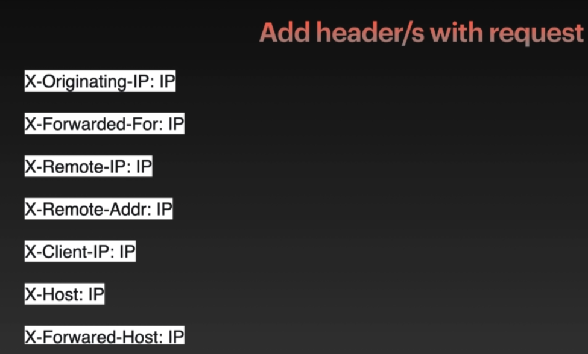

No Rate Limit Bypass 1
- We will send x number of simultaneous requests to the server & server will act on each request
- We will do bypass for no-rate limit using RACE &IP Address.
- Thus, by sending x number of right OTP Token, Password we can successfully crack the code
- No validation or limiting the requests & taking decision is dangerous.
- 1) Race hazard : making large number of requests in a short span of time. Increasing number of threads in BurpSuit
- 2) IP Rotation : Changing the source IP each time

- Let's test for (rate limiting) with fake IP's follow video 12 to setup https://github.com/TheKingOfDuck/burpFakeIP
- Visit https://www.cloudflare.com/rate-limit-test/
- Start Burp and capture Send it to repeter, intruder
- In payload set it to Null Payloads

- Make threads to 100 //Only in pro pack
- Start Attack
- Go to reprater right click fake IP and choose one of the options and press go try it
- several times with different IP options in fakeIP
- You will see